A particular clinic type, e.g. Diabetic Clinic, may have a very specific, complex and repeatable structure. Meddbase allows users to create a Session template* for these clinics once and subsequently have the ability to:
Apply this template to a specific clinician's week in their Site Scheduler.
Choose how many weeks this template should be applied to for that clinician.
What is the purpose of the article?
This article will walk you through the process and logic of creating Session templates, including:
From the Start Page click Find Clinician and search for a Medical Person using the available search criteria.
Click on the search result.
On the Clinician Details page click Site scheduler.
Click Session templates in the top action bar.
Create Template
Clicking the +Create template option in the dropdown opens the Session Template dialog where you can begin to create a template:
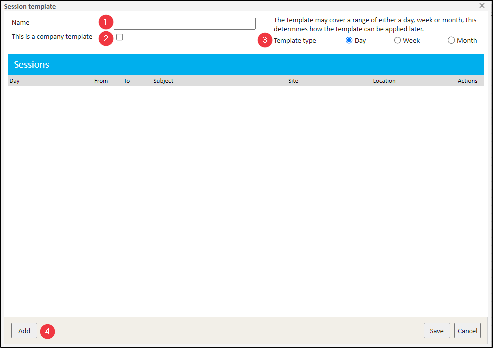
1. Name - this field allows setting a name for the template
2. This is a company template* - this checkbox determines if the template will be visible to everyone in the company. If left unchecked, this template will be personal and only visible to the user who creates it.
3. Template type - a template can be one of 3 types. The type determines how the template can be applied:
Day - this template type can create sessions across a specific day. Each session is only set with a start and finish time. The specific days that the template will apply to are fully specified by the recurrence rules at the point of applying (using) the template, which is described later in the article.
Week - this template type can create sessions across days of the week. Each session is given a day of the week on which it occurs along with the start and finish time. When the template is applied (used), a weekly recurrence can be used to determine which weeks to apply the template across, which is described later in the article.
Month - this template type can create sessions across a month. Each session allows selecting a specific day in the month, e.g. First Tuesday or Last Friday of the month, in which it creates the session. When the template is applied, a monthly recurrence can be used to determine which months to apply the template across, which is described later in the article.
*By default Session Templates belong to the user who created them and are only visible and usable for that user. Templates can also be marked as being a company template, meaning the template belongs to the company (chamber) instead and allows these templates to be visible and usable by all users within the chamber. The ability to mark templates as company owned templates, and the ability to delete and edit those that have already been modified this way is controlled by the Can Modify Session Templates permission on the Company Security Policy. Users with this permission can freely mark any template as being a company template, and can edit and delete existing company templates. Users who do not have this permission can still view and use company templates but cannot create new ones or modify them. These users can still create and modify their own personal templates.
4. Add - clicking this button opens the Session configuration dialog window.
You can use the search functionality to specify the Companies allowed to book appointments into this session, as well as the Appointment Types that can be booked.
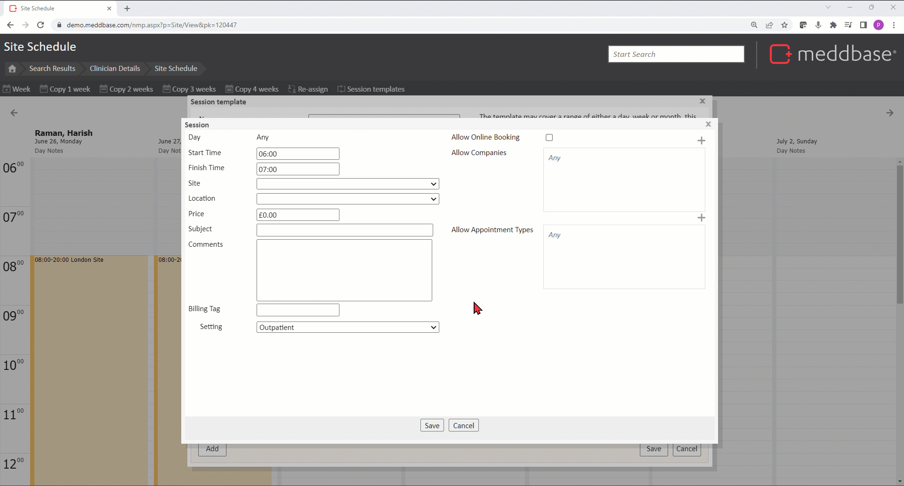
Although almost identical, it will differ from the standard Session configuration dialog in 2 key areas:
Day - depending on the Template type selected, this section can provide different input options When the Day Template Type is selected, the Session Day defaults to Any
When the WeekTemplate Type is selected, the Session Day allows selecting Mon - Sun from the dropdown.
When the Month Template Type is selected, the Session Day allows selecting First, Second, Third, Fourth or Last from the 1st dropdown, and then Mon - Fri (meaning a particular day) or Weekday (Mon-Fri) (meaning all days of the week excl. the weekend)from the 2nd dropdown.
Site - this dropdown will be blank/empty by default. A site can be selected for this session here or the dropdown can be left blank/empty and the site can be selected at the point of the template being applied (used).
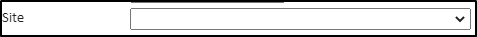
Once the Session is configured click Save and it will be added to the Template.
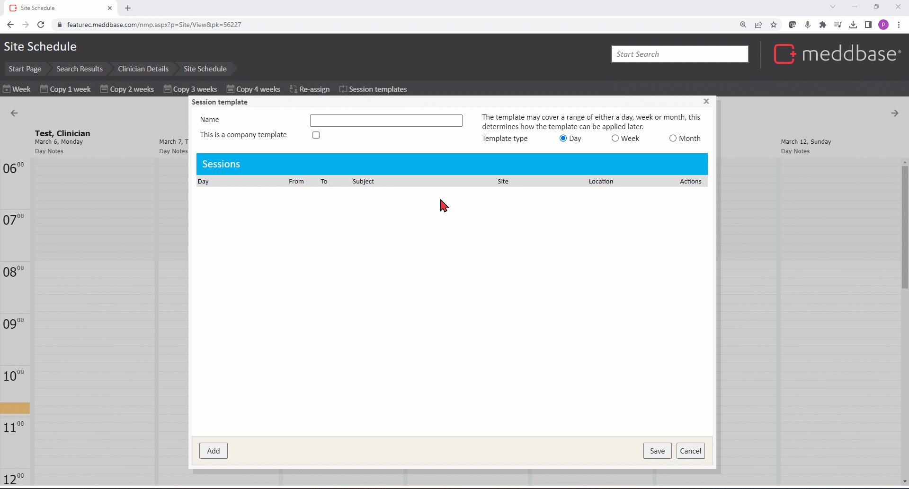
As many Sessions as needed can be added, edited, and/or deleted.
Changing the Template type
As sessions within a template must apply to a specific day and that depends on the template type, changing the template type will cause all sessions in the template to become invalid, e.g.:
A Session is created on a Week template type, the day for the session will be set to a specific day of the week. If the Template type is subsequently changed to e.g. Day then the session day should be Any and sessions with a specific day set no longer apply.
Changing the template type will cause all existing sessions to be invalid as indicated by the day value turning red.
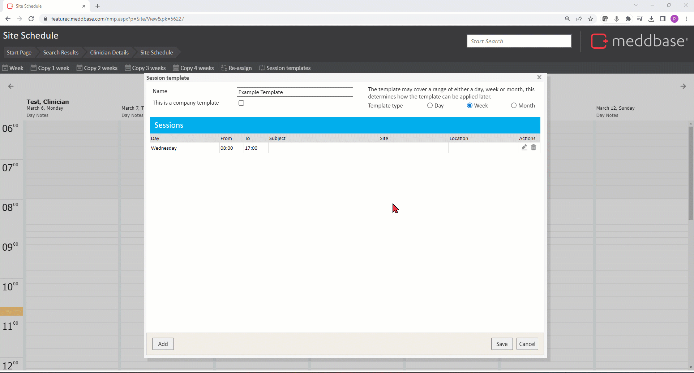
Each Session in the template must be edited and a new valid day for the session must be selected, so that it is valid again according to the new Template type.
Any invalid sessions will be listed in a pop-up error message shown upon saving the template.
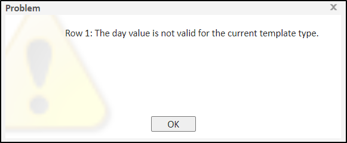
Manage Templates
To Manage templates:
From the Start Page click Find Clinician and search for a Medical Person using the available search criteria.
Click on the search result.
On the Clinician Details page click Site scheduler.
Click Session templates in the top action bar.
Click Manage templates
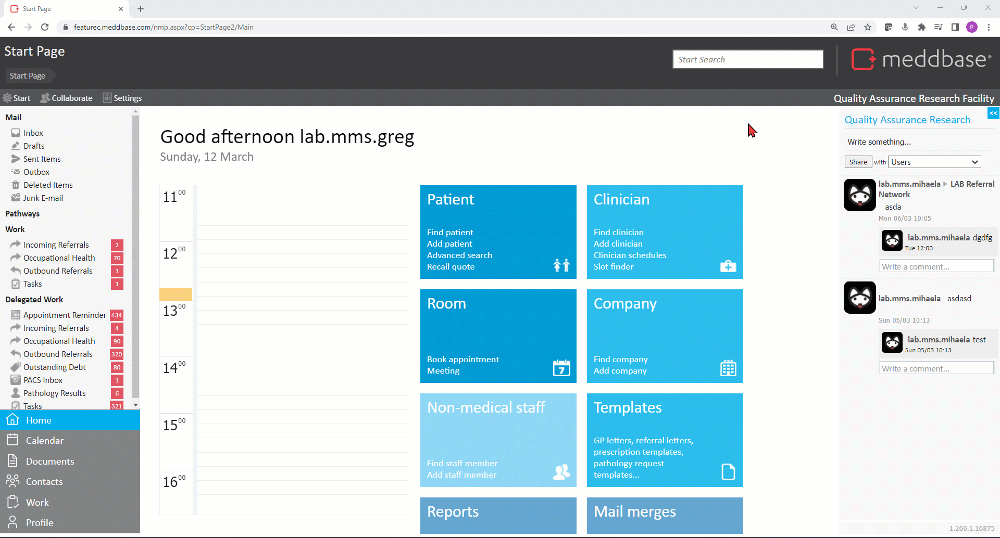
This will open the Session Templates dialog displaying all existing templates and allows:
Applying (using) a template
Editing a template
Deleting a template
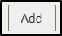
Adding a template
*If any Company Templates have been setup and the user does not have the Can Modify Session Templates permission, they will not have the ability to Edit or Delete the template.
Visibility preferences
To help users deal with the potential of there being a large number of session templates, especially company templates, where a particular user may only use very few of them, the Visibility dropdown within each template row allows hiding some templates and move others to the top of the list (favourites).
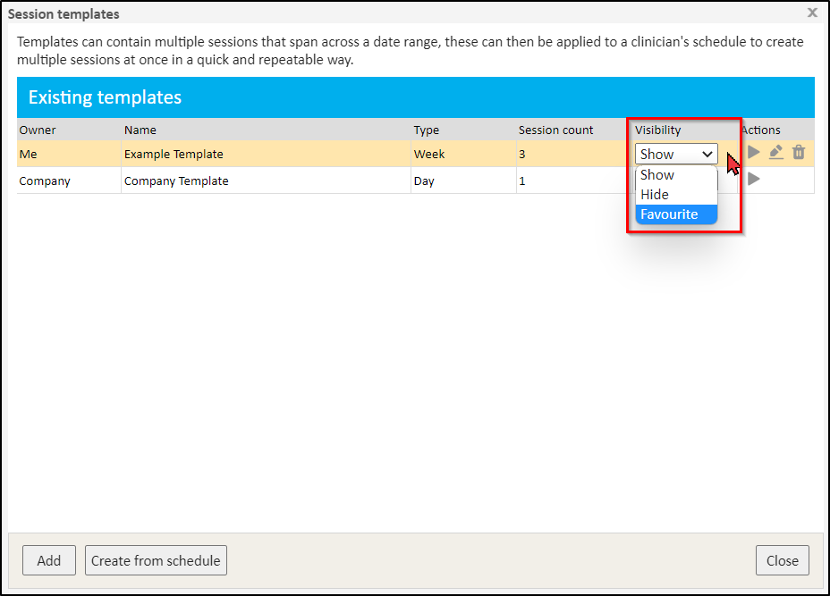
The possible values are as follows:
Show - this is the default value and templates with this visibility setting will be visible when clicking Session templates (if the given template is a Company template it will be visible to other users as well)
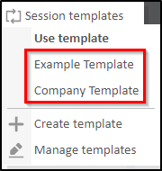
Hide - when set to this option, the given template will not appear in the Session templates menu anymore. This allows delimiting the menu and remove any templates the user doe not use (this is especially useful as unlike personal templates created by the user, they may not be able to delete Company templates that they do not personally use).
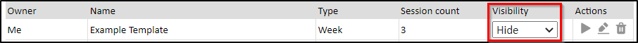
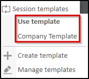
Favourite - when a template has this visibility setting selected, it will appear at the top of the Session templates menu and will appear with a favourite icon next to it. This allows placing common and favourite templates to a convenient and consistent place in the list.
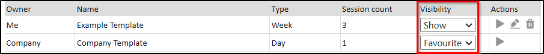
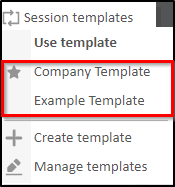
*The visibility settings are personal and only affect the current user and their own visibility of templates. Also note that this only affects the main Session templates menu, i.e. a template with visibility set to Hide, will still be visible in the Manage templates dialog window, where the visibility settings can be changed.
Create from schedule
The Create from schedule button available in the Manage templates dialog allows starting the process of creating a new session template using the current clinician's schedule they are looking at as a base. In other words if the current clinician already has sessions configured, they can be used to create a template.
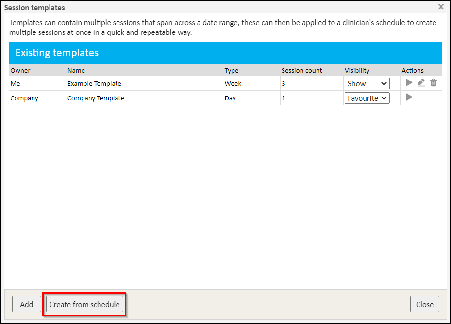
Clicking this button opens a basic dialog containing the following input options:
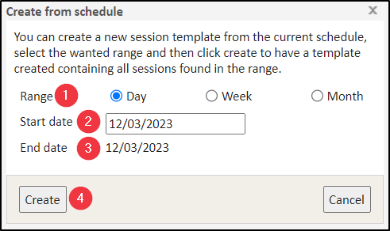
Range- this may be set to either Day, Week or Month (this value will be subsequently applied as the Template type).
Start date- setting the date from which to start the given range.
End date - read only value the date the range ends on. This value depends on the Range option selected, e.g. for Week range starting on 12/03, the End date will automatically be set to 18/03.
Create - this button opens the Session template configuration dialog where all sessions for the current clinician from the selected Range will be listed. From here the template can be configured as per the Create templatechapter of this article.
For the sessions pre-populated in the template they will have been copied directly from the sessions found in the current clinician's schedule and will have all of the same values for their various configuration properties.
The Template type will be a reflection of the Range value selected earlier.
For a Day range all sessions will have the only possible value they could: Any
For a Week range the sessions will bring forward the relevant day of the week they were on, for example a session that was found on a Wednesday will be pre-populated in the template with a day value of Wednesday
For a Month range the sessions will bring forward not only the relevant weekday as above, but also the part of the month they land in, e.g. : if the current clinician's existing session was found on Tuesday the 10th of January, then the relevant session pre-populated into the template will have a day value of Second Tuesday
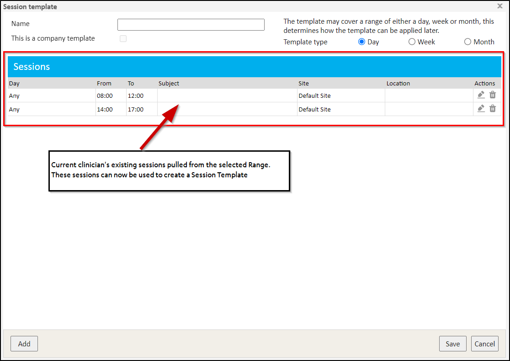
Applying Templates
Once Session Templates have been created users can apply* (use) them to create real sessions for the current clinician. This can be done in 2 ways:
By clicking the respective template name in the Use template section of the Session templates menu.
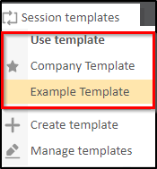
By navigating to the Manage templates menu and clicking the Apply button in the relevant template row.
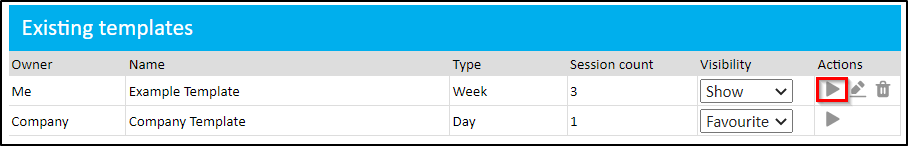
Either way opens the Apply session template* dialog window allowing starting the process of creating real sessions from the template.
*The ability to apply a template to a particular user requires the same permissions as creating a session in a clinician's schedule the manual way, which is the Can Modify Demographic permission on the Medical Person Certificate. If the user does not have the right permission they will not be able to open the Apply session template dialog.
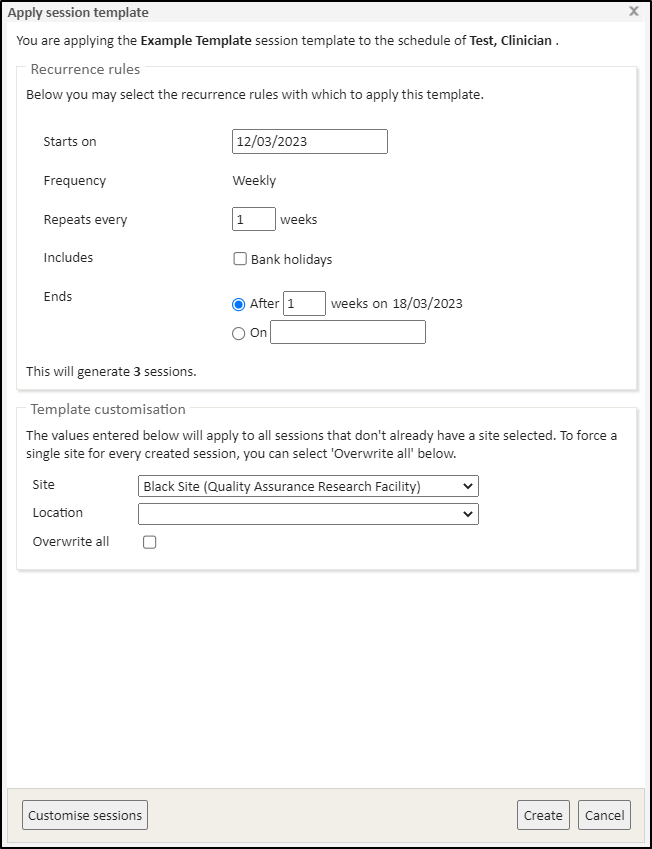
This dialog window contains 2 main configuration sections:
Recurrence rules
The first aspect to configure when applying a session template is the recurrence rules. This section allows defining which days the sessions configured in the template will be created on. The exact options available depend on the Template type that is being applied.
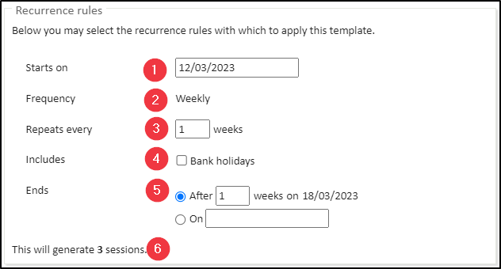
Starts on - the date on which to start the recurrence. All created sessions will then be on or after this day.
Frequency - the frequency with which to repeat the session(s) contained in the template:
For Day Template type - full recurrence frequency rule customization is available, i.e. Daily, Weekly and/or Monthly, and within these the relevant days of the week / month on which to place sessions can be selected, i.e. specific day of the week, or Last Tuesday of the month. All of the sessions within the template will then be created on every date that the recurrence rules match.
For Week Template type - the recurrence frequency is set to Weekly, and here the selection of days of the week will not be given, as the specific days of the week come directly from the Day values configured on each session in the template, e.g. if the template used contains a session with the Day value of Wednesday and the recurrence rules cover a 4 week span and repeat every 2 weeks, then the session will be created twice withing the 4 week span, every 2 weeks.
For Month template type - the recurrence frequency is again set to, this time, Monthly, and again the selection of specific days of the month is not given as these are also able to be pulled directly from the Day values configured on each session in the template, e.g. if the template contains a session with the Day value of Second Friday and the recurrence rules cover a 3 month span, the session will be created 3 times in that range, on the second Friday of each month.
Repeats every - the default value is 1, meaning the session(s) contained in the template are to repeat every 1 Day, Week or Month. Changing this value to, e.g. 2 would make the session(s) contained in the template are to repeat every 2 Days, Weeks or Months, and so on.
Includes - this section allows including particular days, such as weekends (on Daily frequency) and bank holidays.
Ends - this section allows defining how to stop the recurrence. This can be set to a specific number of recurrences or a specific end date.
Session generation counter* - this counter shows how many sessions are to be created based on the current configuration and any changes made result the number of sessions shown to be updated in real time.
*A single recurrence can generate sessions for a maximum date range of 3 years.
Template customisation
When creating Session templates the sessions themselves do not have to be given a specific site/location in which they will appear.
However when creating real sessions into a clinician's schedules, each session must have a specific site.
If each session in the Template has not have a specific site selected, then one must be provided when applying the Template in order to ensure all the sessions created have a valid site.
The Template customisation section allows providing a Site and Location*.
*The Site/Location value will default to the user's default site/location (Start Page > Settings > Preferences > Default Site/Default Location).
The value(s) selected here only apply to sessions in the template that do not have a specified site and/or location.
Alternatively, checking the Overwrite all tick box will apply the selected value(s) to all sessions in the template, thus overwriting any sites and locations selected for these sessions individually.
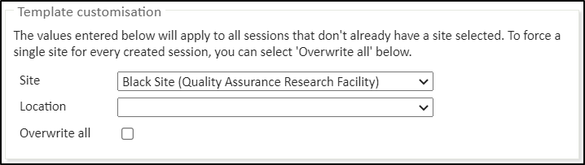
Customising sessions
In the bottom left part of the Apply session template dialog window is a Customise sessions button.
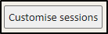
Clicking it opens the Modify Sessions dialog. This allows Editing, Deleting and/or Adding sessions in/from/to this application of the Template*.
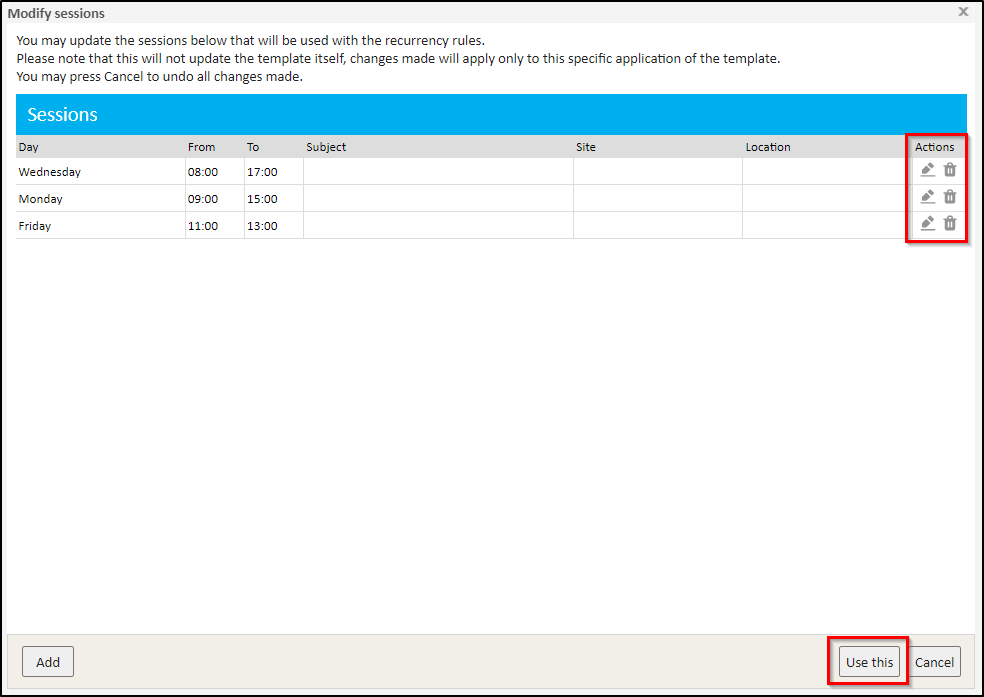
Clicking Cancel returns the user to the previous dialog window. Clicking Use this will save the changes for the current application of the Template.
*And session modifications made here do not change the Template and only apply in this instance, and only for the current clinician.
Finishing
Once the current application of the Template has been configured clicking the Create button in the bottom right part of the Apply session template dialog window, first validates the sessions in the Template against the current clinician.
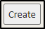
The set of validations performed at this point are as follows:
Validating the session price, (if a price has been given, e.g. a value above £0.00)
If the clinician's employer is the current chamber, then a bill cannot be raised, and so this will fail validation
If the clinician is a virtual clinician then a bill cannot be raised, and so this will fail validation
Validating the minutes parts of the Start and Finish times of the session
The minutes part must be a multiple of the clinician's configured "Time slot size"
For example for 5 minute slots the minutes part must be a multiple of 5
For a 20 minute slots the minutes part must be a multiple of 20
If any session validation failures occur these errors will be explained in a pop-up message and must be resolved before moving forward.
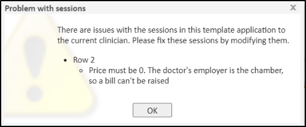
The next validation stage is to check whether the application of the Template does not exceed the maximum allowed date range of 3 years. Any errors will be explained in a pop-up message and must be resolved before moving forward.
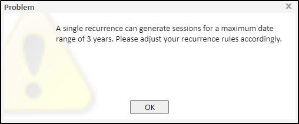
The next validation stage is to check location conflicts. For every session that is being created, the date, time and site/location will be checked to see if there is already an existing session at that time and place. If true, that is considered a location conflict and depending on the result of this there are 4 possible routes forward:
If current recurrence rules do not generate any dates for any sessions (e.g. a Day template with a Weekly recurrence schedule and no days checked), an error is displayed, and this must be resolved before moving forward.
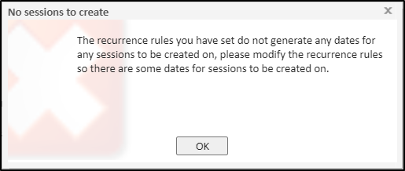
If there are no location conflicts a dialog explaining how many sessions are going to be created is displayed with 2 options: Create or Cancel
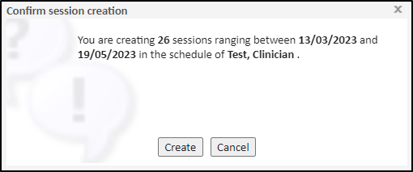
If there are some location conflicts for the sessions being created a dialog listing all proposed session that have conflicts. The Skip conflicting sessions box is checked by default resulting in the listed session not being created. Unticking the box and clicking Create creates the sessions despite the conflicts.
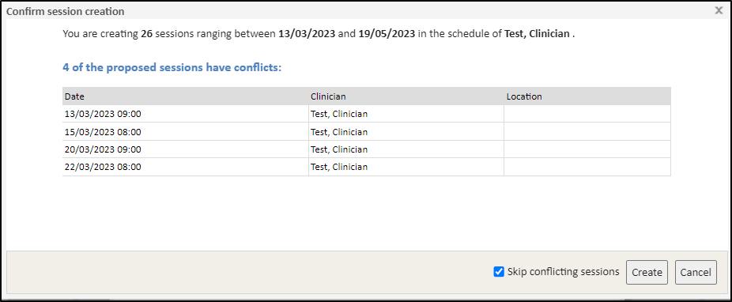
If all proposed sessions have location conflicts the same dialog listing conflicting sessions is displayed. This time, however, if the Skip conflicting sessions box is left checked, then all sessions will be skipped (as all have conflicts) and an error message is displayed upon clicking Create.
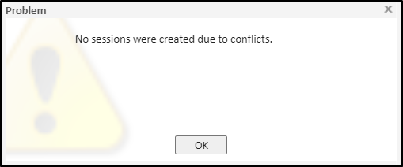
Once the sessions have been created, regardless of which option was used, the Apply session template dialog window will close automatically and the clinician's schedule will refresh showing any newly created sessions (in the week currently displayed)
The template has now been applied and the sessions have been created in the clinician's schedule.